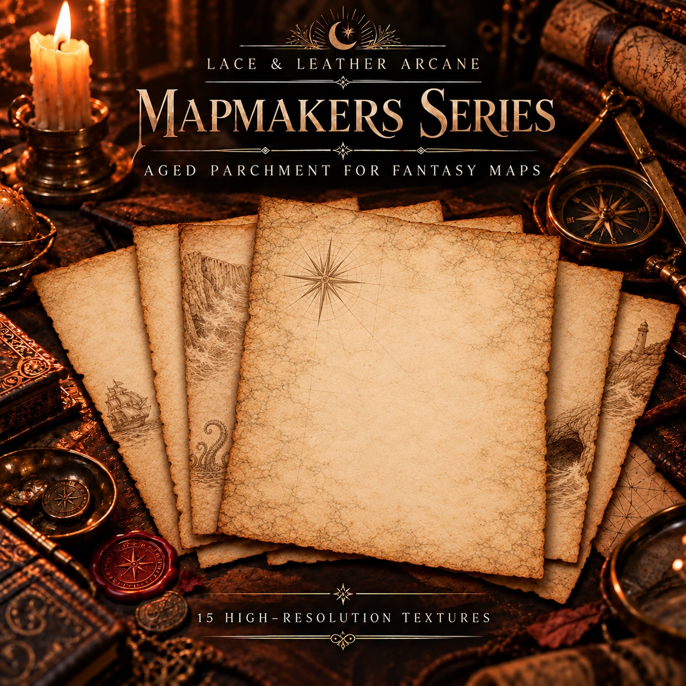

Fantasy Map Paper — Mapmakers Series
Current edition • $5 • 15 aged parchment textures
Fifteen fantasy map paper textures inspired by old-world cartography, nautical charts and weathered atlases. The aged parchment backgrounds leave open space for your own coastlines, labels and illustrations. Use the JPG files for digital mapmaking or the printable parchment PDFs for RPG campaign documents, lore pages and TTRPG handouts.
- 15 high-resolution aged parchment textures
- Built for pencil, ink overlays, stamps, and type
- Great for TTRPG campaigns, novels, and worldbuilding docs
- Digital delivery by email after confirmed payment
Current edition: Direct website purchases and Etsy purchases now deliver the same current product edition.
Printing this pack? Read our parchment paper and journal-page printing guide for file formats, scaling and a first test print.
Explore the mapmaker sheets
Tap any sheet to enlarge it. Every image is a watermarked sample.
Clean, high-resolution originals are provided only with purchase.